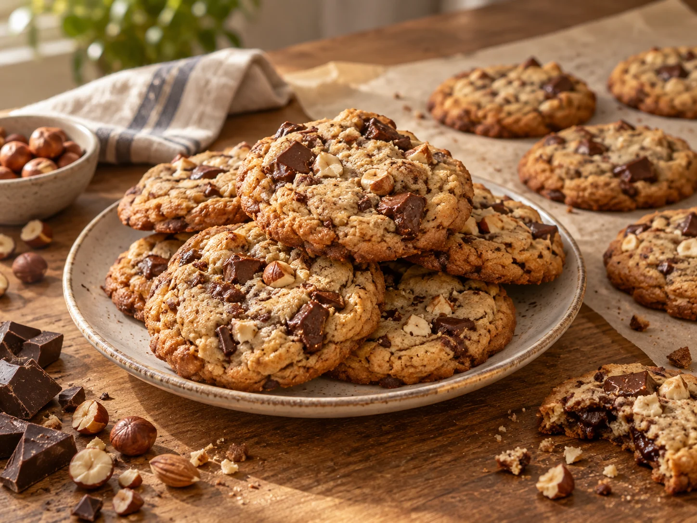

Was Süßes geht immer · Gebäck & süße Teilchen
Cookies

Goldbraune Cookies mit knackigen Nüssen und großzügigen Stücken dunkler Schokolade – außen leicht knusprig und innen noch schön weich.
Zutaten
150 gButter, weich
150 gRohrzucker
½ TLGemahlene Vanille oder Vanillepaste
1Ei
200 gMehl
½ TLBackpulver
1 PriseSalz
100 gHaselnüsse oder Mandeln, gehackt
150 gZartbitterschokolade, gehackt oder als Schoko-Chunks
Zubereitung
- Den Backofen auf 180 °C Ober-/Unterhitze vorheizen und ein Backblech mit Backpapier belegen.
- Butter, Rohrzucker und Vanille cremig verrühren. Das Ei dazugeben und gründlich unterrühren.
- Mehl, Backpulver und Salz mischen und kurz unter den Teig rühren. Die gehackten Nüsse dazugeben und die Schokolade ganz zum Schluss nur kurz unterheben.
- Mit einem Eisportionierer oder zwei Teelöffeln Teigkugeln mit ausreichend Abstand auf das Blech setzen. Die Cookies etwa 14–16 Minuten backen.
Tipp
Die Cookies dürfen beim Herausnehmen in der Mitte noch etwas weich sein. Lass sie einige Minuten auf dem Blech ruhen – beim Abkühlen werden sie fester.